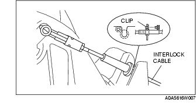
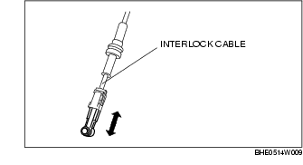

Interlock cable inspection
1. Turn the ignition switch to ON position (engine OFF).
2. Remove the clip of the selector lever base plate, then remove the interlock cable from the U-groove.

3. Remove the interlock cable from the selector lever.
4. Verify that the interlock cable moves freely with the brake pedal depressed.
